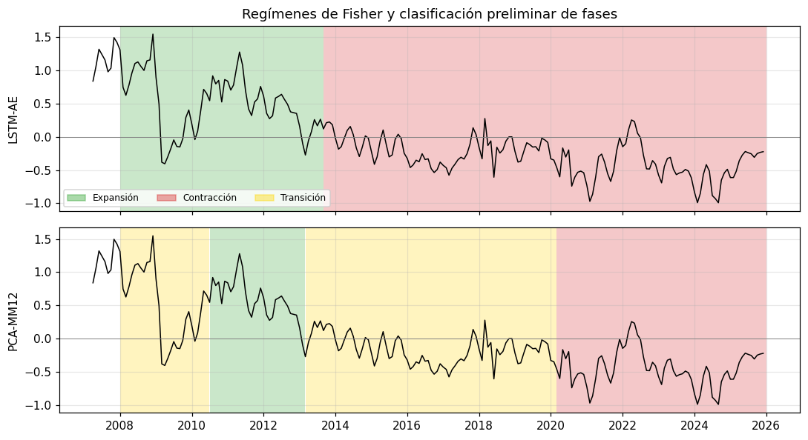

09 · LSTM-Autoencoder — dinámica temporal, validación walk-forward y datación de regímenes
Tesis: Medición del ciclo financiero en Perú mediante técnicas de reducción dimensional y machine learning Autor: Roberto Samaniego Salcedo · Asesor: Dr. Sergio Camiz
Qué agrega frente a 08_autoencoder: el autoencoder del notebook 08 trata cada mes como una observación independiente (igual que el PCA). El LSTM-Autoencoder codifica ventanas de L meses: su código latente z_t resume la trayectoria reciente del sistema financiero, que es lo que define una fase del ciclo.
Diseño (definiciones formales en marco_matematico_ae_lstm.qmd, secciones 4–6):
Modelo: LSTM codificador → código z_t ∈ R³ → LSTM decodificador no condicionado que reconstruye la ventana en orden inverso (Srivastava, Mansimov & Salakhutdinov, 2015). Ventana L = 12 meses; z_t se fecha al último mes de la ventana (sin mirar al futuro).
Validación walk-forward (expanding window): para cada año de evaluación se reentrena con todos los meses anteriores, estandarizando solo con esos datos, y se mide el error de reconstrucción del año siguiente. Es la única forma honesta de afirmar que el indicador “detecta” un episodio. Referencias de comparación: PCA y AE estático evaluados con el mismo esquema.
Incertidumbre: Monte Carlo Dropout (Gal & Ghahramani, 2016).
Datación de regímenes: partición óptima de Fisher (1958) sobre la trayectoria latente: segmentos contiguos de varianza intra mínima.
Clasificación preliminar de fases (expansión / contracción / transición) con una regla operativa explícita, contrastada ex post con episodios conocidos.
import os, sys, time, warningswarnings.filterwarnings('ignore')sys.path.insert(0, 'notebooks') if os.path.basename(os.getcwd()) !='notebooks'else sys.path.insert(0, '.')from modelos_dl import*ir_a_raiz_del_repo()sys.path.insert(0, 'notebooks')import numpy as npimport pandas as pdimport matplotlib.pyplot as pltfrom sklearn.decomposition import PCAfrom sklearn.preprocessing import StandardScalerplt.rcParams.update({'figure.dpi': 110, 'axes.grid': True, 'grid.alpha': 0.3})torch.set_num_threads(max(1, os.cpu_count() //2))df = pd.read_csv('data/processed/dataset_transformado_mensual.csv', index_col=0, parse_dates=True)nombres = [c.replace('_log_diff', '').replace('_diff', '') for c in df.columns]n, p = df.shapeL =12# longitud de ventana (meses)D =3# dimensión latente (comparabilidad con PCA y con el AE de 08)print(f'{n} meses x {p} variables | ventana L = {L} | d = {D}')def sombrear_episodios(ax):for nombre, (ini, fin) in EPISODIOS_REFERENCIA.items(): ax.axvspan(pd.Timestamp(ini), pd.Timestamp(fin), color='grey', alpha=0.18, lw=0) ax.text(pd.Timestamp(ini), ax.get_ylim()[1], nombre, fontsize=7, va='top', rotation=90, color='dimgrey')# Hiperparámetros comunes (fijados a priori; no se optimizan sobre el periodo de evaluación)HP_LSTM =dict(epocas=1500, lr=5e-3, weight_decay=1e-3, ruido=0.05, paciencia=100)HP_AE =dict(epocas=3000, lr=5e-3, weight_decay=1e-3, ruido=0.10, paciencia=200)
227 meses x 17 variables | ventana L = 12 | d = 3
NoteContinuidad mensual verificada
El dataset mensual cubre 2007-02 a 2025-12 (227 meses × 17 variables). La celda siguiente verifica que el calendario esté completo y detiene la ejecución si falta cualquier mes.
# Verificación de continuidad mensual: no se trabaja con meses faltantescalendario = pd.date_range(df.index.min(), df.index.max(), freq='MS')faltantes = calendario.difference(df.index)print(f'Meses esperados: {len(calendario)} | presentes: {len(df)} | faltantes: {len(faltantes)}')iflen(faltantes):print('Meses faltantes:', ', '.join(f.strftime('%Y-%m') for f in faltantes))
Meses esperados: 227 | presentes: 227 | faltantes: 0
2. Validación walk-forward
Esquema de ventana expansiva: para cada año de evaluación a = 2011, …, 2025 se entrena con los meses hasta diciembre de a − 1 y se evalúan los meses de a. El primer año de evaluación es 2011 para disponer de al menos 36 ventanas de entrenamiento; en consecuencia la crisis financiera global (2008–2009) no puede evaluarse fuera de muestra con esta base. Esto es una motivación empírica directa para extender la muestra hacia atrás (ver 01b y 04c).
Para hacer comparables los errores de distintos reentrenamientos, cada error se expresa como razón respecto del percentil 95 del error en entrenamiento de ese mismo modelo: valores > 1 indican un mes más anómalo que el 95 % de lo que el modelo conocía.
2011: entrenamiento 47 meses (36 ventanas) — 1 s
2012: entrenamiento 59 meses (48 ventanas) — 2 s
2013: entrenamiento 71 meses (60 ventanas) — 2 s
2014: entrenamiento 83 meses (72 ventanas) — 3 s
2015: entrenamiento 95 meses (84 ventanas) — 4 s
2016: entrenamiento 107 meses (96 ventanas) — 5 s
2017: entrenamiento 119 meses (108 ventanas) — 6 s
2018: entrenamiento 131 meses (120 ventanas) — 8 s
2019: entrenamiento 143 meses (132 ventanas) — 9 s
2020: entrenamiento 155 meses (144 ventanas) — 11 s
2021: entrenamiento 167 meses (156 ventanas) — 13 s
2022: entrenamiento 179 meses (168 ventanas) — 15 s
2023: entrenamiento 191 meses (180 ventanas) — 16 s
2024: entrenamiento 203 meses (192 ventanas) — 17 s
2025: entrenamiento 215 meses (204 ventanas) — 19 s
2.1 ¿Qué método separa mejor los episodios de referencia?
Se compara la razón de error dentro de los episodios evaluables fuera de muestra (taper tantrum 2013 y COVID-19 2020) contra el resto de meses. Un buen indicador debe tener mediana alta en episodios y baja fuera de ellos; se reporta además la proporción de meses del episodio que superan el umbral 1 (sensibilidad) y la proporción de meses fuera de episodios que lo superan (tasa de falsas alarmas).
en_episodio = pd.Series(False, index=wf.index)etiqueta = pd.Series('', index=wf.index)for nombre, (ini, fin) in EPISODIOS_REFERENCIA.items(): m = (wf.index >= ini) & (wf.index <= fin) en_episodio[m] =True etiqueta[m] = nombrefilas = []for metodo in ['pca', 'ae', 'lstm']: fila = {'metodo': metodo,'mediana_fuera_de_episodios': wf.loc[~en_episodio, metodo].median(),'falsas_alarmas_%': 100* (wf.loc[~en_episodio, metodo] >1).mean()}for nombre in ['Taper tantrum', 'COVID-19']: v = wf.loc[etiqueta == nombre, metodo] fila[f'mediana_{nombre}'] = v.median() fila[f'sensibilidad_{nombre}_%'] =100* (v >1).mean() filas.append(fila)discrim = pd.DataFrame(filas).set_index('metodo').round(2)discrim.to_csv('data/results/09_discriminacion_episodios.csv')discrim.T
metodo
pca
ae
lstm
mediana_fuera_de_episodios
0.26
0.24
0.18
falsas_alarmas_%
1.85
1.85
0.62
mediana_Taper tantrum
0.37
0.27
0.13
sensibilidad_Taper tantrum_%
0.00
0.00
0.00
mediana_COVID-19
1.76
1.71
1.59
sensibilidad_COVID-19_%
50.00
50.00
50.00
3. Modelo de muestra completa y trayectoria latente
Para describir (no para validar) la trayectoria del sistema en todo el periodo se entrena el LSTM-AE con la muestra completa. Como en el notebook 08, el código latente solo está identificado salvo rotaciones: se rota por Procrustes contra los scores del PCA del mismo mes para que los ejes sean comparables. Se entrenan 5 réplicas y se toma la central (máximo RV promedio) para no depender de la semilla.
Xs = StandardScaler().fit_transform(df.values)W = crear_ventanas(Xs, L)fechas_z = df.index[L -1:]corte =int(len(W) *0.85)modelos, codigos = [], []for s inrange(5): fijar_semillas(500+ s) m = LSTMAutoencoder(p, 16, D, dropout=0.20) entrenar(m, W[:corte], W[corte:], semilla=500+ s, **HP_LSTM) m.eval()with torch.no_grad(): codigos.append(m.codificar(a_tensor(W)).numpy()) modelos.append(m)rv = np.array([[coeficiente_rv(a, b) for b in codigos] for a in codigos])central =int(np.argmax(rv.mean(axis=1)))lstm_final = modelos[central]scores_pca = PCA(D).fit_transform(Xs)[L -1:]Z_rot, _ = rotar_procrustes(codigos[central], scores_pca)ae08 = pd.read_csv('data/results/08_ae_factores_y_error.csv', index_col=0, parse_dates=True)print(f'RV entre réplicas LSTM (mediana): {np.median(rv[np.triu_indices(5, 1)]):.3f}')print(f'RV LSTM-AE vs PCA: {coeficiente_rv(codigos[central], scores_pca):.3f}')print(f'RV LSTM-AE vs AE estático (08): {coeficiente_rv(codigos[central], ae08.loc[fechas_z].iloc[:, :D].values):.3f}')
RV entre réplicas LSTM (mediana): 0.931
RV LSTM-AE vs PCA: 0.216
RV LSTM-AE vs AE estático (08): 0.270
4. Datación de regímenes: partición óptima de Fisher
Sobre la trayectoria latente estandarizada (n − L + 1 = 216 meses × 3 ejes) se buscan las particiones en k segmentos contiguos que minimizan la suma de cuadrados intra-segmento (programación dinámica exacta), con longitud mínima de 12 meses por régimen. El número de regímenes se elige con una regla de codo explícita: el menor k a partir del cual pasar a k + 1 reduce la suma de cuadrados intra en menos de 10 %.
Como contraste, se aplica el mismo procedimiento a los scores del PCA.
def datar(Y, k_max=10, tam_min=12, umbral=0.10): Ys = StandardScaler().fit_transform(Y) res = particion_fisher(Ys, k_max=k_max, tam_min=tam_min) sce = pd.Series({k: v['sce'] for k, v in res.items()}) reduccion =-sce.pct_change().shift(-1) # reducción relativa al pasar de k a k+1 k_opt =int(reduccion[reduccion < umbral].index.min())return res, sce, reduccion, k_optres_l, sce_l, red_l, k_l = datar(Z_rot)res_p, sce_p, red_p, k_p = datar(scores_pca)print(f'Regímenes elegidos — LSTM-AE: k = {k_l} | PCA: k = {k_p}')pd.DataFrame({'SCE_LSTM': sce_l, 'reduccion_LSTM': red_l, 'SCE_PCA': sce_p, 'reduccion_PCA': red_p}).round(3)
Regímenes elegidos — LSTM-AE: k = 2 | PCA: k = 1
SCE_LSTM
reduccion_LSTM
SCE_PCA
reduccion_PCA
1
648.000
0.367
648.000
0.050
2
410.182
0.094
615.450
0.085
3
371.716
0.340
563.428
0.054
4
245.172
0.158
533.119
0.066
5
206.432
0.332
497.923
0.047
6
137.997
0.099
474.416
0.028
7
124.283
0.096
461.197
0.014
8
112.314
0.109
454.561
0.012
9
100.115
0.052
449.203
0.009
10
94.874
NaN
444.990
NaN
4.1 Control: ¿la persistencia viene del modelo o de la ventana?
El código del LSTM resume 12 meses, por lo que es mecánicamente más suave que un score mensual de PCA. Para no atribuir al LSTM una persistencia que solo proviene del promediado, se repite la datación sobre la media móvil de 12 meses de los scores del PCA (misma información temporal, sin no linealidad ni memoria aprendida).
scores_pca_mm = pd.DataFrame(PCA(D).fit_transform(Xs), index=df.index).rolling(L).mean().iloc[L -1:].valuesres_m, sce_m, red_m, k_m = datar(scores_pca_mm)print(f'PCA suavizado (MM12): k = {k_m}')print('Cortes PCA-MM12:', [fechas_z[c].strftime('%Y-%m') for c in res_m[k_m]['cortes']])print(f'RV LSTM-AE vs PCA-MM12: {coeficiente_rv(codigos[central], scores_pca_mm):.3f}')
PCA suavizado (MM12): k = 8
Cortes PCA-MM12: ['2009-06', '2010-07', '2013-03', '2016-04', '2020-03', '2021-12', '2023-11']
RV LSTM-AE vs PCA-MM12: 0.844
def tabla_segmentos(cortes, fechas): bordes = [0] +list(cortes) + [len(fechas)]return [(fechas[a], fechas[b -1]) for a, b inzip(bordes[:-1], bordes[1:])]seg_l = tabla_segmentos(res_l[k_l]['cortes'], fechas_z)seg_p = tabla_segmentos(res_p[k_p]['cortes'], fechas_z)print('Cortes LSTM-AE:', [fechas_z[c].strftime('%Y-%m') for c in res_l[k_l]['cortes']])print('Cortes PCA: ', [fechas_z[c].strftime('%Y-%m') for c in res_p[k_p]['cortes']])
Cortes LSTM-AE: ['2013-09']
Cortes PCA: []
5. Clasificación preliminar de fases
Regla operativa (propuesta para discusión con el asesor, no definitiva): cada régimen de Fisher se caracteriza por el promedio, dentro del segmento, de un componente de crédito = media de las tasas de crecimiento estandarizadas del crédito empresarial, de consumo e hipotecario (variables núcleo del ciclo financiero en Drehmann, Borio & Tsatsaronis, 2012).
Transición: |promedio| ≤ 0,25, o segmento de menos de 18 meses
El umbral de 0,25 y la duración mínima son parámetros arbitrarios y deben someterse a análisis de sensibilidad antes de cualquier conclusión. La clasificación solo usa el crecimiento del crédito para etiquetar segmentos que fueron definidos por toda la estructura latente; no participa en la segmentación.
cols_credito = [c for c in df.columns if c.startswith('Crédito')]comp_credito = pd.Series(StandardScaler().fit_transform(df[cols_credito]).mean(axis=1), index=df.index)def clasificar(segmentos, umbral=0.25, dur_min=18): filas = []for ini, fin in segmentos: v = comp_credito.loc[ini:fin] dur =len(v) m = v.mean()if dur < dur_min orabs(m) <= umbral: fase ='Transición'else: fase ='Expansión'if m >0else'Contracción' episodios = [e for e, (a, b) in EPISODIOS_REFERENCIA.items()if pd.Timestamp(a) <= fin and pd.Timestamp(b) >= ini] filas.append({'inicio': ini.strftime('%Y-%m'), 'fin': fin.strftime('%Y-%m'), 'meses': dur,'componente_credito_medio': round(m, 2), 'fase': fase,'episodios_contenidos': ', '.join(episodios)})return pd.DataFrame(filas)fases_lstm = clasificar(seg_l)fases_pca = clasificar(tabla_segmentos(res_m[k_m]['cortes'], fechas_z)) # se usa el PCA suavizado (control justo)fases_lstm.to_csv('data/results/09_regimenes_lstm.csv', index=False)fases_pca.to_csv('data/results/09_regimenes_pca.csv', index=False)print('Regímenes LSTM-AE'); display(fases_lstm)print('Regímenes PCA suavizado (MM12)'); display(fases_pca)
Regímenes LSTM-AE
inicio
fin
meses
componente_credito_medio
fase
episodios_contenidos
0
2008-01
2013-08
68
0.49
Expansión
Crisis financiera global, Taper tantrum
1
2013-09
2025-12
148
-0.31
Contracción
Taper tantrum, COVID-19
Regímenes PCA suavizado (MM12)
inicio
fin
meses
componente_credito_medio
fase
episodios_contenidos
0
2008-01
2009-05
17
0.66
Transición
Crisis financiera global
1
2009-06
2010-06
13
0.22
Transición
Crisis financiera global
2
2010-07
2013-02
32
0.57
Expansión
3
2013-03
2016-03
37
-0.07
Transición
Taper tantrum
4
2016-04
2020-02
47
-0.24
Transición
5
2020-03
2021-11
21
-0.49
Contracción
COVID-19
6
2021-12
2023-10
23
-0.31
Contracción
7
2023-11
2025-12
26
-0.52
Contracción
colores = {'Expansión': 'tab:green', 'Contracción': 'tab:red', 'Transición': 'gold'}fig, axes = plt.subplots(2, 1, figsize=(10, 5.5), sharex=True)for ax, fases, titulo in [(axes[0], fases_lstm, 'LSTM-AE'), (axes[1], fases_pca, 'PCA-MM12')]: ax.plot(comp_credito.index, comp_credito.rolling(3).mean(), color='k', lw=1, label='Componente de crédito (MM3)')for _, f in fases.iterrows(): ax.axvspan(pd.Timestamp(f['inicio']), pd.Timestamp(f['fin']) + pd.offsets.MonthEnd(0), color=colores[f['fase']], alpha=0.25, lw=0) ax.set_ylabel(titulo); ax.axhline(0, color='grey', lw=0.6)from matplotlib.patches import Patchaxes[0].legend(handles=[Patch(color=c, alpha=0.4, label=f) for f, c in colores.items()], fontsize=8, loc='lower left', ncol=3)axes[0].set_title('Regímenes de Fisher y clasificación preliminar de fases')plt.tight_layout(); plt.savefig('reports/figures/09_regimenes.png'); plt.show()

6. Guardar resultados
pd.DataFrame(Z_rot, index=fechas_z, columns=[f'LSTM{i+1}_rotado'for i inrange(D)]).to_csv('data/results/09_lstm_trayectoria_latente.csv')corr_var.to_csv('data/results/09_lstm_correlaciones_variables.csv')torch.save(lstm_final.state_dict(), 'data/results/09_lstm_modelo_final.pt')print('Resultados guardados en data/results/09_*')
Resultados guardados en data/results/09_*
7. Conclusiones (dataset mensual: 227 meses)
Fuera de muestra, la ventaja del LSTM-AE es modesta. Los tres métodos detectan el COVID-19 en el 50 % de sus meses; ninguno detecta el taper tantrum. El LSTM-AE tiene la menor tasa de falsas alarmas (0,6 % frente a 1,9 % del PCA y del AE), pero también la menor magnitud de señal en los episodios.
Estable, pero distinto del PCA mensual. RV entre réplicas 0,93; RV con los scores mensuales del PCA 0,22 y con su media móvil de 12 meses 0,84: lo que el LSTM agrega es, sobre todo, integración temporal.
La datación de regímenes con LSTM no está demostrada como estable. Fisher sobre el LSTM-AE da 2 regímenes (corte único en 2013-09, al cierre del taper tantrum), pero la regla de codo que fija k es frágil: las reducciones de la SCE no son monótonas (9 % de k = 2 a 3, 34 % de k = 3 a 4), de modo que un cambio pequeño en los datos puede alterar k. El PCA suavizado (MM12) da 8 regímenes, con cortes en 2009-06, 2010-07, 2013-03, 2016-04, 2020-03, 2021-12 y 2023-11. Se usa como datación de referencia provisional por su anclaje en la cadena PCA; la estabilidad de ambas dataciones debe evaluarse por bootstrap por bloques. El LSTM aporta evidencia complementaria (su único corte coincide con el taper tantrum).
Fases preliminares (PCA-MM12; regla δ = 0,25, duración mínima de 18 meses): expansión 2010-07 a 2013-02; transición 2013-03 a 2020-02; contracción desde 2020-03. El tramo 2008–2010, con crédito alto, queda como transición solo por la duración de sus segmentos. La regla requiere análisis de sensibilidad.
Pendientes metodológicos: (i) reemplazar la regla de codo por un criterio más estable (p. ej. estabilidad bootstrap de los cortes); (ii) la crisis de 2008–2009 sigue sin ser evaluable fuera de muestra con la base 2007–2025, lo que motiva la extensión hacia 1985 (01b, 04c).